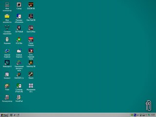
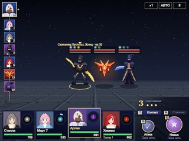

Win 98

Для Win 10 и 11 и для Linux x64. Распакуйте архив и запустите Win98.exe или win98.
Скачать для Win ZIP, 1,0 ГБ Скачать для Linux TAR.GZ, 1,0 ГБ
Star Rail 98

Пошаговая ролевая игра о Звёздном экспрессе в стиле 1999 года. В Win 98 её качают через Steam, а здесь она есть отдельно. Бесплатно.
Сайты о Star Rail 98
- Star Rail 98новости, персонажи, миры, галерея
- АстралВики 98персонажи, карты с сундуками, прохождение
- Ковчегтир-лист и отряды по замерам из боёв